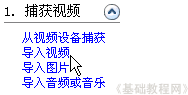
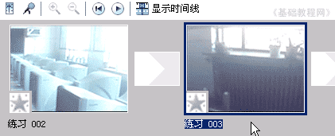

视频编辑 基础入门教程
九、编辑视频 返回目录
前面我们主要学习的是剪切一小段视频，这一课我们来学习一下，把两小段合并到一起，下面来看一个练习；
1、启动视频软件
1）点“开始－所有程序－Windows Movie Maker”，启动WinXP自带的视频制作软件；
2）进入后出现一个空白窗口，在左边任务中找到第一个“捕获视频”，点下边第二行的“导入视频”，
在出来的对话框里选择上次保存的“练习”；

2）然后开始导入，过一阵后，中间的工作区里头出来各个片段，这儿是自动分割的，名称依次是“练习001、002...”等等，先存放在中间的工作区里头；
3）按照上一课的方法，用“剪辑－拆分”命令，把“练习002”，切出2秒来，然后把“练习003”也切出2秒来；
不太准就点播放器那儿的的“上一帧、下一帧”按钮仔细调节；
4）把“练习002”拖到下面的时间线上第一格里，把“练习003”拖到第二格里，这样就把这两小段视频连到一起了，
在右边的播放器里，点播放按钮，可以看一下连接的效果；

5）接下来用第3课当中的方法，点“完成电源”中的“保存到我的计算机”，然后按提示一步一步往下走，文件名称改为“练习d”，最后就可以保存一个视频文件，
如果忘了可以回到第3课再看一下；
本节学习了用Windows Movie Maker剪辑视频的基本方法，如果你成功地完成了练习，请继续学习下一课内容；
本教程由86团学校TeliuTe制作|著作权所有
基础教程网：http://teliute.org/
美丽的校园……
转载和引用本站内容，请保留版权信息和本站链接。